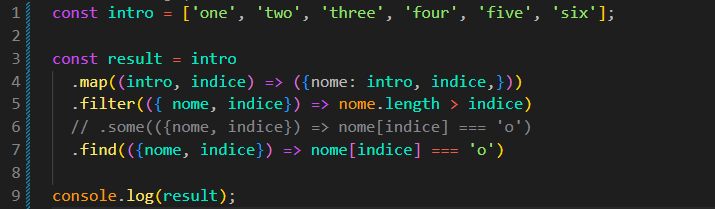

Method Chaining
Introdução
Agora iremos aprender sobre métodos iterativos encadeados, que podem ser utilizados em conjunto para realizar tarefas específicas.
Agora iremos aprender sobre métodos iterativos encadeados, que podem ser utilizados em conjunto para realizar tarefas específicas.
JS:

Um exemplo seria, a partir de nosso array de entrada:
const intro = ['one', 'two', 'three', 'four', 'five', 'six'];
Iremos querer criar um array de objetos, onde cada elemento terá um nome e um índice.
Para fazermos isso, iremos começar com o método map. O callback do map pode receber três parâmetros: o elemento atual, o índice e o array original.
Neste exemplo, iremos utilizar apenas os dois primeiros: elemento e índice.
Feito isso, iremos querer retornar um novo objeto. Podemos fazer da seguinte forma:
const result = intro.map((intro, indice) => {
return {
nome: intro,
indice,
};
});
Também podemos escrever de uma forma mais curta utilizando o retorno implícito das arrow functions:
const result = intro.map((intro, indice) => ({ nome: intro, indice }));
Quando usamos uma arrow function com apenas uma expressão, podemos omitir o return. Porém, como estamos retornando um objeto diretamente, precisamos colocá-lo entre parênteses.
Agora iremos supor que desejamos manter em nosso array apenas os objetos nos quais o tamanho do nome seja maior que o seu índice.
const result = intro
.map((intro, indice) => ({ nome: intro, indice }))
.filter(({ nome, indice }) => nome.length > indice);
Podemos observar que apenas adicionamos outro método ao código. Para melhorar a legibilidade, colocamos cada método em uma nova linha.
Isso é chamado de Method Chaining ou encadeamento de métodos. O resultado de um método é utilizado como entrada para o próximo método.
Agora, se precisarmos descobrir se existe pelo menos um elemento em nosso array cujo caractere na posição indicada seja 'o', podemos utilizar o método some.
O método some verifica se pelo menos um elemento atende à condição definida no callback. Se encontrar um, retorna true. Caso nenhum atenda à condição, retorna false.
const result = intro
.map((intro, indice) => ({ nome: intro, indice }))
.filter(({ nome, indice }) => nome.length > indice)
.some(({ nome, indice }) => nome[indice] === 'o');
Nesse caso, o resultado será true, pois existe pelo menos um elemento que atende à condição.
Se quisermos retornar o próprio objeto que atende à condição, podemos remover o some e utilizar o find.
O método find procura o primeiro elemento que atende à condição definida no callback.
Diferentemente do some, que retorna apenas true ou false, o find retorna o próprio elemento encontrado.
const result = intro
.map((intro, indice) => ({ nome: intro, indice }))
.filter(({ nome, indice }) => nome.length > indice)
.find(({ nome, indice }) => nome[indice] === 'o');
Neste exemplo, o find irá retornar o primeiro objeto que possui a letra 'o' na posição correspondente ao seu índice.
É importante entender que o find não impede que outros métodos sejam utilizados. Porém, como ele retorna um elemento, e não mais um array, não podemos simplesmente continuar utilizando métodos de array sobre esse resultado.
Também é importante lembrar que estamos utilizando {} nos parâmetros do callback para desestruturar o objeto.
Por exemplo:
.some(({ nome, indice }) => nome[indice] === 'o')
Sem a desestruturação, teríamos que receber o objeto inteiro e acessar suas propriedades:
.some((objeto) => objeto.nome[objeto.indice] === 'o')
As duas formas funcionam. A primeira apenas deixa o código mais simples de ler.
Uma forma simples de visualizar o encadeamento é pensar que cada método entrega seu resultado para o próximo:
array .map() → transforma os elementos .filter() → mantém apenas alguns elementos .some() → verifica se algum atende à condição
Por exemplo, o map começa com um array e devolve outro array. Esse novo array é recebido pelo filter. Depois, o resultado do filter é recebido pelo some.
Portanto, podemos pensar no encadeamento como uma sequência: entrada → transformação → filtragem → verificação.
Importante: nem todos os métodos retornam o mesmo tipo de valor. Métodos como map e filter retornam um array, enquanto some retorna um booleano e find retorna um elemento.
Por isso, devemos sempre prestar atenção ao retorno de cada método antes de encadear outro método depois dele.
Resumo:
Importante: ao utilizar { nome, indice } no parâmetro do callback, estamos utilizando desestruturação para acessar diretamente as propriedades do objeto.